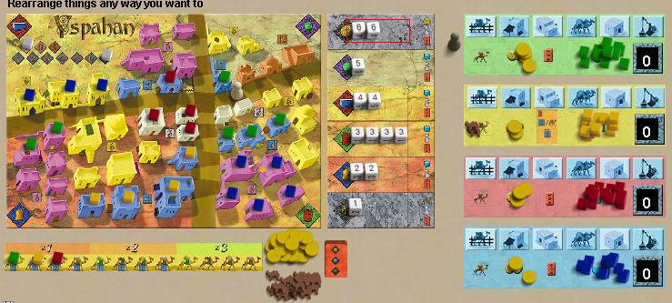

Yspahan
Yspahan is a "standard medium euro" economic game. The
goal of the game is to score victory points, which are
aquired in several different ways, but resources are quite
limited, so there is no easy way to guarantee a
win. The most clever and unusual aspect of the
game is how it uses dice, lots
of dice, to create variety. The dice are rolled
once per round, then each player selects a group of dice to
use for the round, and players all get equal chances to get
first choice of the newly rolled dice.
The rules of Yspahan are a little complex, so unless
you are already familiar with the game, you should read the
official rules
here.
Yspahan plays well
with either 3 or 4 players, and online should take 1/2 hour
or less.
Robots:
Goal-oriented (rather than lookahead driven) AIs by Gunther
Rosenbaum ("Guenther" on the site).
The robots are ported from the Yspahan PC game and slightly
modified. All robots are interested in constructing
buildings (and therefore collecting resources), but the
sequence is adapted to their overall goal.
-
Dumbot:: At the beginning of the game he starts filling
soaks, at the end of the game he uses the supervisor. He
never attacks his opponents directly.
- Smartbot: is a soak builder. He will never use the
supervisor.
-
Bestbot: is a caravan player. He builds some soaks, but
mainly he wants to use the supervisor and to get extra
cards using building 4. Sometimes he attacks his
opponents strength.
Bestbot should be stronger than Smartbot; Dumbot might have
simular strength as Smartbot. |

|